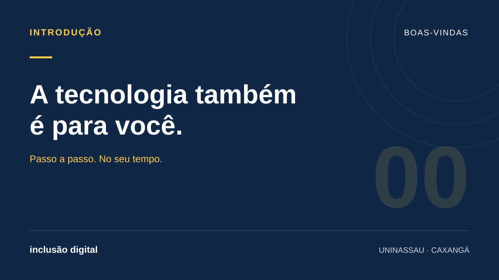

TECNOLOGIA PARA TODAS AS IDADES
Mais conexão.
Mais autonomia.
No seu tempo.
Aprenda a usar o celular e o WhatsApp com calma, confiança e segurança. Um passo de cada vez, do seu jeito.
Vamos aprendere rever quando quiser.

A tecnologia também
é para você.
Vídeo disponível em breve
Introdução ao projeto
Conheça a proposta e veja o que vamos aprender juntos.
SUA JORNADA COMEÇA AQUI
Pequenas aulas.
Grandes descobertas.
Escolha um assunto e acompanhe o passo a passo.
Você pode pausar, voltar e assistir de novo.
Sem pressa para aprender. Deixe seu celular por perto para praticar. Se precisar, convide alguém da família para acompanhar.
TECNOLOGIA & COMUNIDADE
Aprender aproxima.
Compartilhar transforma.
Inclusão digital de pessoas idosas: uso do celular, WhatsApp e prevenção de golpes
Somos estudantes de Análise e Desenvolvimento de Sistemas da UNINASSAU, campus Caxangá. Nosso projeto busca aproximar a tecnologia da comunidade e ajudar pessoas idosas a usar o celular com mais autonomia e segurança.
A proposta reúne uma oficina presencial em um asilo e estas aulas para continuar aprendendo em casa. Filhos e outros familiares podem ajudar no acesso e acompanhar cada descoberta.
Vamos praticar funções úteis do WhatsApp, conhecer o portal Gov.br e conversar sobre cuidados com mensagens suspeitas, pedidos de dinheiro e informações pessoais.
QUEM FAZ ACONTECER
Juntos nessa conexão.
Estudantes de Análise e Desenvolvimento de Sistemas
UNINASSAU · Campus Caxangá